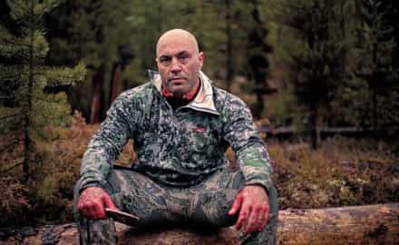

Alfonso Taft is a surfer stoner All-American Aryan alpha male quarterback. Raised in the Northeast, he speaks with a Southern twang for no apparent reason. Host of America's #1 Chadcast.


ROK readers can learn much from the masculine principles of Joe Rogan. The UFC commentator and comedian is successful, down to earth, and constantly learning. His masculine principles of integrity, brotherhood, discipline, and curiosity have brought him fame, glory, and a status limited only by the cosmos.
Joe began his career as a stand up comedian and later landed roles in television sitcoms Hardball and NewsRadio. He continued practicing his disciplines of comedy and martial arts when, in 1997, he started working for the Ultimate Fighting Championship as a commentator. During this time, UFC was looked down upon and not the mainstream success it is today. Thirty years before the Conor McGregor phenomenon, Joe and others helped build the UFC brand from the ground up.
For comedians, stealing another comedian’s “bit” or rant is a grave sin that can quickly get a comic ostracized. Rogan has stated:
Great comics don’t steal. They may be influenced by others, especially early in their careers, but the truly great ones pride themselves in being able to craft original thoughts for their audience.
Back in 2007, he confronted notorious joke thief Carlos Mencia while Mencia was performing in a Los Angeles Comedy Club. Rogan sprang up from the crowd onto the stage and confronted Mencia. Shortly after, Rogan was handed a microphone. An emasculated Carlos Mencia stood there like a confused asshole as Rogan berated him with clear evidence that Mencia stole material from other comedians.
“George Lopez didn’t grab you by your fucking neck and slam you against the Laugh Factory Wall for ripping off his shit in your HBO Special?! You fucking liar!”
“Yeah, he did,” replied Mencia in disgrace.
Rogan completely dominated the scene and banished Mencia into oblivion. Mencia has never been the same since. He’s completely fallen off the map, a broken man.
“Your mind is weak. Keep talking shit, fat boy. I’ll keep exposing you,” Rogan wrote in a blog post.
When it comes to health and fitness, Rogan does not fuck around. At 50 years old, he maintains a physical regimen that includes martial arts, lifting, yoga, running, jiu-jitsu, archery, and hunting. Rogan eats eggs from his own chickens he raises at his home and devours the meat from his big game hunts.
Rogan routinely freezes his body in frigid temperatures as low as -240 degrees in cryogenic chambers. He also frequents sensory deprivation tanks for deep meditation. Rogan describes the tanks as “the most important tool I’ve ever used for developing my mind, for thinking, for evolving.” For users, the tanks offers a natural psychedelic experiences without the use of drugs.
Rogan’s training is spiritual in nature. “I see martial arts as moving forms of meditation,” he said in an interview with Men’s Fitness. “When you’re sparring or drilling techniques, you can’t think of anything else. All your bullshit goes to the back of your head. Because if it doesn’t, you’re going to get fucked up.”

Human beings still have the same genes they had 10,000 years ago. Our bodies are designed to have a certain amount of physical stress and violence in them. We’re designed to run from jaguars and fight to defend our territory. We’re hardwired with all this shit that you really can’t deny if you want to be a balanced human being.
In 2005, actor Wesley Snipes challenged Rogan to a cage fight. Rogan accepted the challenge and trained hard in jiu-jitsu and other forms of martial arts for the next five months. A financially desperate Wesley Snipes eventually backed out.
“I think when he researched it and found out I’d been doing martial arts my whole life, he realized I was going to choke the shit out of him,” Rogan said, “If I’d fought Wesley Snipes, I was 99.9% convinced all I had to do was grab that guy and choke the fucking life out of him.”
Launched in 2009, The Joe Rogan Experience Podcast is Rogan’s Magnus Opus. His desire to learn and improve as a man are in full display during podcasts with legends like Wim Hof, Alex Jones, and Jordan Peterson. His podcasts with alpha males like Lance Armstrong, Dan Bilzerian, and Jacko Willinc are quality resources for men.
Rogan’s podcast has valuable information for the curious man seeking knowledge. Whether it’s learning about ancient civilizations with Graham Hancock or learning about sacred geometry with Randall Carlson, the show features guests from the full political spectrum as well as various fighters, entertainers, and entrepreneurs. Personally, I’ve learned more from The Joe Rogan Experience podcast than what I learned in a college classroom, by far.
Curiosity has also lead him to experiment with psychedelic drugs. Joe is featured in documentaries The Union (The Business Behind Getting High) and DMT (The Spirit Molecule).
Joe Rogan is constantly challenging himself to learn new masculine skills. His has developed expertise in the areas of pool, hunting, archery, martial arts, and cooking.
Obsession fueled discipline and discipline manages that obsession.
[…]
If you’re trying to improve your yoga, I think it will help your jiu-jitsu. Life is about the pursuit of excellence. That pursuit is probably more exciting to me now than ever.
Perhaps Rogan’s most masculine skill other than martial arts is hunting, a discipline not practiced by weak men. “It is a combination of athletics, extreme endurance, hiking, outdoorsmanship, survival skills, the knowledge of hunting, and then you have to be a good shot on top of all that.” During a JRE podcast with Steven Crowder, it was revealed that exchanges DM’s with Donald Trump Jr. about hunting.
The key to Rogan’s success is turning his curiosity into action and willing himself to excellence through discipline. Rogan’s ability to maintain mainstream success as a UFC commentator and an internet shitlord simultaneously have lifted him to legendary status as a podcast pioneer higher primate.
Although Rogan has leftists and beta male comedian cucks in his circle, his compadres mainly consist of 21st Century alpha men. Rogan is universally respected by his brothers because of his integrity, curiosity, and discipline. At the age of 50, he is a living testament to his mantra, “Be the hero of your own movie.”
Read More: The Decline In Testosterone is Destroying The Basis of Masculinity